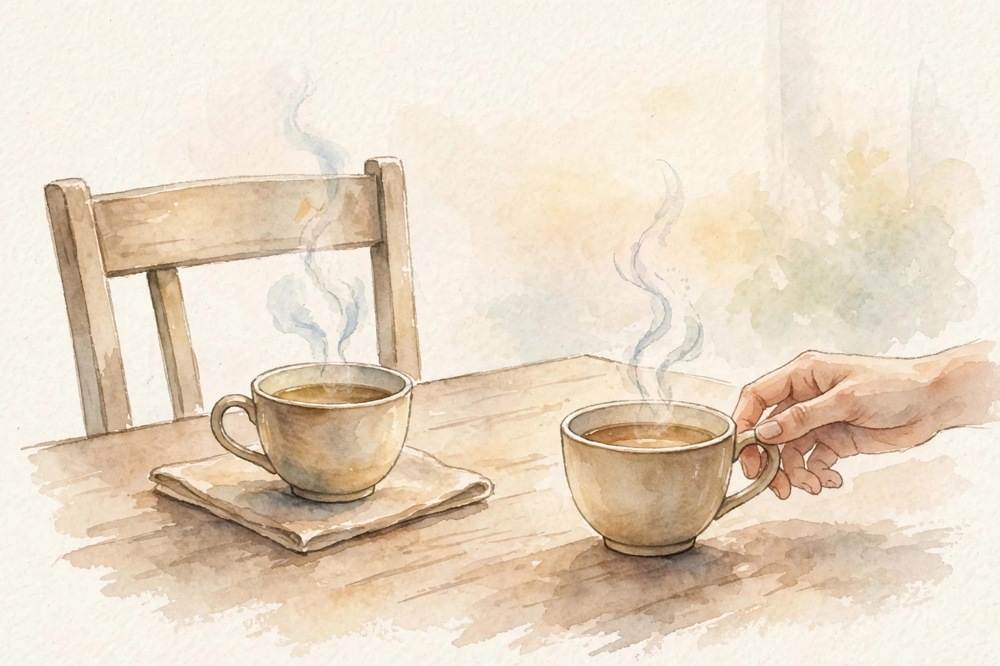
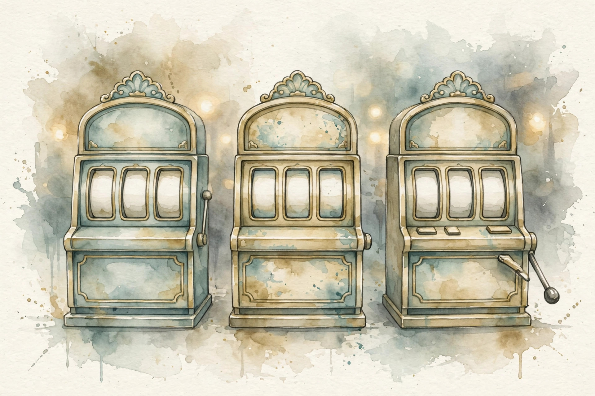

U06 · Active elicitation and assistance games
Questions cost attention. The value of information prices each one in the units of the decision it serves. Then the harder game: the human knows the goal and the agent does not. This unit builds the VoI machinery, the assistance game where the agent reads the human like a sensor, and the bandits that learn with a human in the loop.
Sourcing. No full transcript exists for sessions S10 and S11. This companion narrates content/v2/cs329h/lessons/u06_lesson.md. All twelve concepts are taught as independent theory: the lesson marks the sessions PLANNED and every concept PLANNED / SOURCE ATTRIBUTION PENDING.
Lesson inconsistency disclosed. In C09 the toy runs T = 300 rounds (Contract 2) but the figure alt text says T = 200 (Contract 15). Both are stated as written. The regret numbers are reported with the T = 300 the toy specifies.
How to read the tags. Every number carries its lesson section. Anything the companion computes is tagged Illustration. A Interpretation tag marks the companion's own reading of the lesson. Where the lesson leaves a value out, the page says so in words.
From the lesson A fact, number, or mechanism from the lesson.
Illustration Invented by the companion: an analogy, a toy with made-up values, or a what-if. Never lecture content.
Interpretation The companion's reading of why a lesson fact matters. The fact is the lesson's, the gloss is ours.
C01 · Contract 6 Points to the exact lesson section behind a claim or number.
Section 1 · C01, C02, C03
From the lessonC01 · Contract 3, 5, 6
Value of information is the expected improvement in the final decision from asking. The formula: VoI(q) = E over answers of the best expected utility after the answer, minus the best expected utility now. The lesson toy: the utility gap g is -0.5 or 1.5, prior 0.5 each. Without the query, choose A for expected gap 0.5. With the query: g = -0.5 means pick B for 0, g = 1.5 means pick A for 1.5. Expected after: 0.75. VoI = 0.25. Lesson figure u06_f01 draws the prior bars and the posterior decisions.
From the lessonC02 · Contract 3, 5, 6
Three questions, one slot. Rank by expected variance reduction. The lesson toy: prior gap N(0,1), three queries with noise sd 0.7, 1.0, 1.5. The gain formula gives 1/(1+s^2): 0.671, 0.500, 0.308. Query 1 wins. The noisiest question teaches the least. Lesson figure u06_f02 draws the three bars.
From the lessonC03 · Contract 3, 5, 6
Uncertainty over preferences is a posterior. The lesson toy: gap g with posterior N(0.8, 0.16), 2000 samples, seed 0. Sample mean 0.79, sample sd 0.40, P(g > 0) = 0.978. The spread drives elicitation: wide spread means ask more. Lesson figure u06_f03 draws the histogram.
VoI prices the question in the units of the decision. The toy question is worth 0.25 utils. Ask it when the elicitation costs less.
VoI is zero when the answer cannot flip the decision. A question that changes nothing is worth nothing, however interesting.
Section 2 · C04, C05, C06
From the lessonC04 · Contract 3, 5, 6
An assistance game has two players and one payoff. The human knows the reward function. The agent does not. Both want the same thing: the expected common reward. The human's actions are evidence about the hidden objective theta. The agent holds a belief over theta and updates it on everything the human does. This is a POMDP with the human in the loop.
From the lessonC04 · Contract 6, C06 · Contract 6
The tea toy makes it numeric. Theta is tea or coffee, prior 0.5 each. The human reaches for the left cupboard. The likelihoods: P(reach left | tea) = 0.8, P(reach left | coffee) = 0.3. Bayes: posterior for tea = 0.8 times 0.5 over (0.8 times 0.5 + 0.3 times 0.5) = 0.727. The agent brews tea. The expected common reward rises from 0.5 to 0.727. Lesson figure u06_f04 draws the belief loop.

Illustration The belief toy. Move the likelihoods and the browser runs the lesson's C06 Bayes update.
0.80
0.30
Posterior appears here.
From the lessonC06 · Contract 6 With the lesson's likelihoods the readout must show posterior 0.727.
From the lessonC05 · Contract 3, 5, 6
The objective is shared, but the information differs. The human acts with full knowledge of theta. The agent acts on a belief. An agent that ignores the human and guesses at random gets expected payoff 0.5. The belief-driven agent gets 0.727. Watching the human is worth 0.227. Misalignment here comes from ignorance, not malice: the agent wants the same thing and cannot see it.
The human knows the goal, the agent does not, both want the same thing. The human's behavior is the agent's sensor.
Misalignment comes from ignorance, not malice. Watching the human is worth 0.227 in the toy.
Section 3 · C07, C08, C09
From the lessonC07 · Contract 3, 5, 6
A contextual bandit shows a context, takes an arm, earns a reward. The policy maps contexts to arms. The lesson toy: morning and evening, tea and coffee, rewards [[0.8, 0.3], [0.2, 0.9]]. The optimal policy serves tea in the morning (0.8) and coffee in the evening (0.9). Contexts equally likely: expected reward 0.85. A context-blind policy that always serves tea gets 0.5. Context is worth 0.35. Lesson figure u06_f06 carries the comparison table.

From the lessonC08 · Contract 3, 5, 6
In an assisted bandit the agent proposes and the human disposes. The human veto bounds the downside of exploration. The lesson toy for the morning: the agent suggests uniformly, the human overrides a wrong suggestion with probability 0.9. Team reward = 0.5 times 0.8 + 0.5 times (0.9 times 0.8 + 0.1 times 0.3) = 0.775. Solo uniform gets 0.55. Assistance is worth 0.225. The failure case is the rubber stamp: override probability 0.1 under fatigue gives 0.575, barely above solo, minus the attention cost: net negative.
From the lessonC09 · Contract 3, 5, 6
Exploration cost is cumulative regret. The lesson toy: 3-arm Bernoulli [0.6, 0.55, 0.5], seed 0. Greedy regret 29.6, epsilon-greedy (0.1) regret 2.4. Greedy locks onto a suboptimal arm and pays linearly. Epsilon-greedy pays a steady exploration tax and finds the best arm. The lesson's Contract 2 runs T = 300 rounds while its Contract 15 alt text says T = 200. Both are stated as written, and the regret numbers are reported with the toy's T = 300. Lesson figure u06_f07 draws the two curves.
Context is worth 0.35 in the toy. The context-blind policy earns 0.5 where the context-aware earns 0.85.
The human veto bounds the downside: team 0.775 against solo 0.55. The team can explore more aggressively because the veto caps the cost.
The rubber stamp kills the team. Override probability 0.1 gives 0.575, barely above solo, minus the attention cost: net negative.
Section 4 · C10, C11, C12
From the lessonC10 · Contract 3, 5, 6
Elicitation burden is the human-side cost: time, attention, fatigue. Each extra query buys less than the last. The lesson toy: Gaussian gap, query noise sd 1. Marginal gains for queries 1 to 5: 0.5, 0.167, 0.083, 0.05, 0.033. The fifth query buys 0.033 where the first bought 0.5. Stop when the marginal gain falls below the cost per query. Lesson figure u06_f08 draws the falling bars.
From the lessonC11 · Contract 3, 5
Preferences are personal data. The answers, the query sequence, and the inferred posterior are all sensitive: each answer reduces uncertainty about theta, which is the point of elicitation and also the leak. The lesson's minimization rule: ask only decision-relevant queries (C01), aggregate where possible, expire raw answers. Anonymized preference traces re-identify: preferences are fingerprints.
From the lessonC12 · Contract 3, 5, 6
The case design assembles the unit into a plan. The lesson's hypothetical product case: 200 beta users, 5 queries each, 1000 answers, stop when marginal gain falls below 0.02 or the budget is spent, metric held-out pairwise accuracy on 200 pairs. Every number is labeled hypothetical in the lesson. The hypothetical projection: the 1000 answers cut posterior variance by about 0.9 on the toy model. The design flows from the unit: VoI ranks the queries, the posterior tracks uncertainty, the marginal rule stops, the privacy checklist screens, and the metric is decided before data collection.
Stop when the marginal gain falls below the cost per query. The fifth query buys 0.033 where the first bought 0.5.
Wisdom index